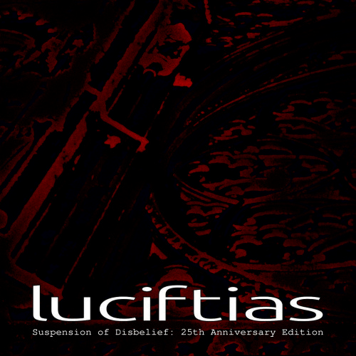

New Album Release!
Suspension of Disbelief: 25th Anniversary Edition
Released in conjunction with the Winter Solstice and available now on Bandcamp!

Compiled in celebration of 25 years since the first Luciftias album was released. Despite being a digital album, the material is organized into four "discs" in an approximation of box set of yesteryear.
- "Disc 1" consists of remastered versions of the original album tracks in the form presented on early promo copies
- "Disc 2" contains remastered versions of 2009's remix album, Intellectual Decompression: Suspended Remixes
- "Disc 3" features the bonus tracks from 2000 and 2003 releases, the full original 1993 recordings that Iluzija and Quiddity were based on, unreleased demo tracks, and a special unheard remix by The Ghost Between the Strings
- "Disc 4" is a special, previously unreleased longform ambient piece that was created across the ages, having been manipulated at different points between August 1999 and May 2025!